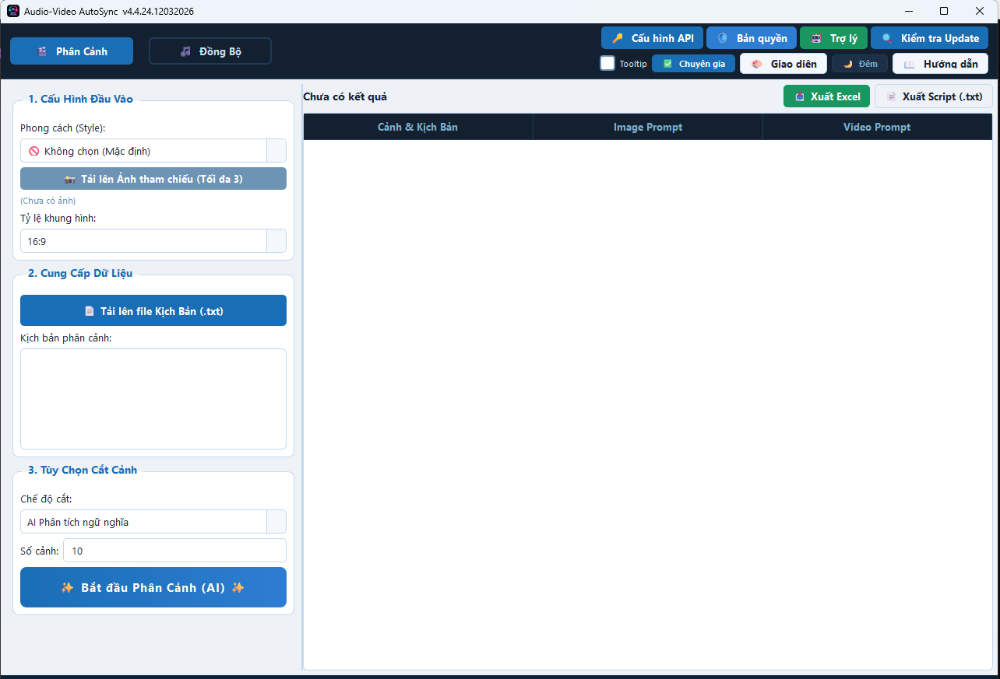
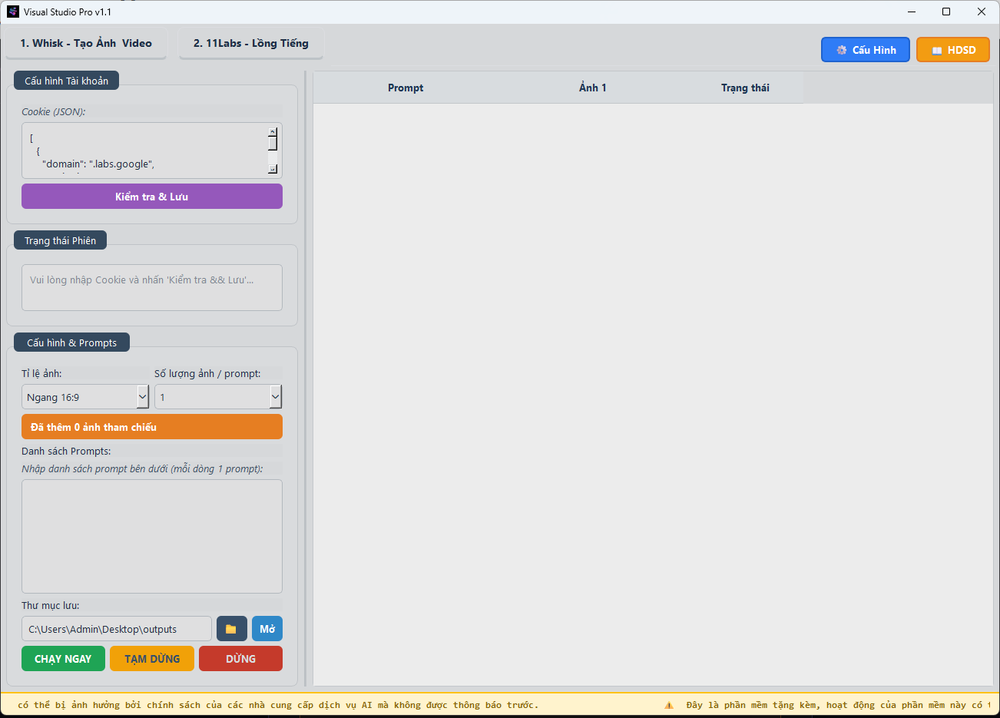
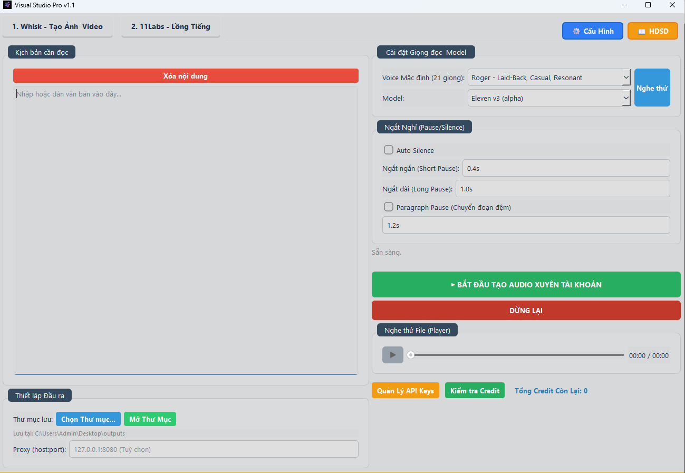
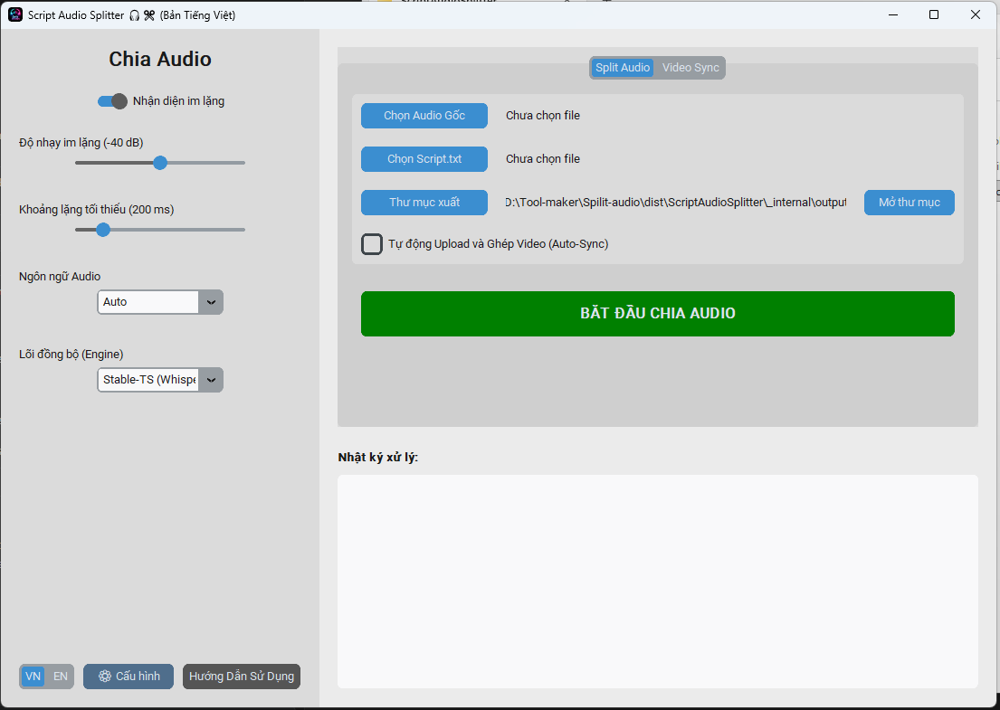
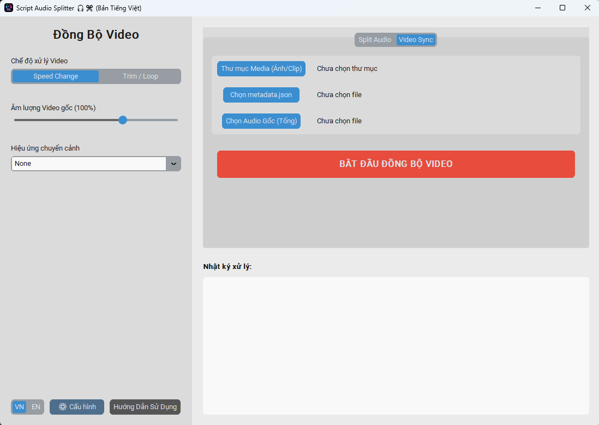

Tài Liệu Hướng Dẫn
Hướng dẫn cài đặt và sử dụng toàn diện công cụ Visual Studio Pro
Giai Đoạn Chuẩn Bị
1. Hướng dẫn lấy API Key Gemini (Dùng cho Phân Cảnh AI)
- Truy cập trang chủ Google AI Studio.
- Đăng nhập bằng tài khoản Google của bạn (Nên dùng Chrome).
- Nhấn vào nút màu xanh "Create API key".
- Chọn một dự án hiện có hoặc nhấn "Create API key in new project" để tạo mới.
- Màn hình sẽ hiển thị chuỗi API Key. Sao chép (Copy) toàn bộ mã này.
- Mở công cụ Visual Studio Pro, chuyển sang Tab 1 (Storyboard), dán mã vào khung cấu hình API bên trái và nhấn "Kiểm tra & Lưu".
2. Hướng dẫn lấy Cookie Whisk (Dùng cho Tạo Ảnh/Video)
- Mở trình duyệt (Chrome/Edge/Cốc Cốc), cài đặt tiện ích Cookie Exporter TẠI ĐÂY. Nhấn "Thêm vào Chrome".
- Truy cập vào trang chủ của dự án Whisk tại https://labs.google/fx/tools/whisk/project và đảm bảo bạn đã đăng nhập tài khoản Google (Gmail).
- Nhấn vào biểu tượng Tiện ích (Mảnh ghép) ở góc phải trên cùng trình duyệt, chọn mở Cookie Exporter.
- Tiện ích sẽ tự động quét và hiển thị Cookie. Bạn hãy nhấn nút "Copy as JSON" để sao chép chuẩn định dạng.
- Mở công cụ Visual Studio Pro, chuyển sang Tab 2 (Whisk), dán toàn bộ đoạn mã vừa copy vào ô chữ nhật ghi "Cookie (JSON)" bên góc trái.
- Nhấn nút "Kiểm tra & Lưu", nếu hệ thống báo thành công hoặc "SESSION VALID" là bạn đã có thể bắt đầu tạo ảnh!
Hướng Dẫn Vận Hành App
Lưu ý Quan trọng
Đại đa số các thông số kỹ thuật và cài đặt mặc định trên toàn bộ hệ thống (từ thông số AI, tốc độ, đến cắt/ghép video) đã được tối ưu hóa ở mức tốt nhất để đảm bảo tỷ lệ thành công cao và chất lượng đầu ra đạt chuẩn. Khách hàng chỉ nên điều chỉnh các thông số chuyên sâu này khi thực sự am hiểu về AI và cấu trúc dữ liệu, nhằm tránh phát sinh lỗi không đáng có.
1. TAB STORYBOARD - PHÂN TÁCH KỊCH BẢN
- Nhập Kịch bản: Upload tải lên file txt hoặc paste toàn bộ kịch bản hoàn chỉnh vào ô văn bản lớn để phân tách phần, mỗi phần sau này sẽ tương ứng với 1 ảnh/clip trình diễn.
- Tuỳ chỉnh phong cách: Lựa chọn Chủ đề (Anime, Cinematic...), Style Prompts, Tỷ lệ khung hình và Ngôn ngữ Đầu ra cho bộ ảnh.
- Tạo Phân cảnh: Bấm "Bắt đầu phân tích & Chia dòng" để AI tự động cắt lớp kịch bản thành các Prompt sinh ảnh chi tiết một cách hoàn hảo.
- Tiếp nối mạch việc: Sau khi phân cảnh hoàn tất, bạn có thể lưu thư mục, sao chép Prompt, hoặc tiện lợi nhất là bấm "🚀 Tự Động Gửi sang Whisk" để chuyển trọn bộ kịch bản sang bước số 2 tạo ảnh/video, và bấm "Tự Động Gửi sang 11Labs" để chuyển thẳng kịch bản sang Tab 3 làm lồng tiếng (TTS) - Nên bấm gửi cả 2 cùng lúc vì hai tiến trình này sẽ chạy song song, giúp tiết kiệm tối đa thời gian.
2. TAB WHISK - TẠO ẢNH & VIDEO
- Tính liên tục: Nếu bạn đã nhấn "Tự Động Gửi" từ bước 1, danh sách Prompt đã có sẵn ở đây (mỗi dòng sinh ra 1 hàng để quản lý tiện lợi). Nếu không, bạn có thể copy-paste thủ công.
- Cài đặt sinh ảnh: Chọn loại mẫu sinh ảnh (Model), Tỷ lệ khung hình và Cài đặt thư mục lưu.
- Thực thi tự động: Bấm chọn số lượng ảnh mong muốn tạo cho MỖI prompt ở list trên. Nhấn "CHẠY NGAY". Quá trình sinh ảnh/video kết hợp tải về diễn ra hoàn toàn tự động, đa luồng. Bạn chỉ cần pha cafe và chờ đợi!
3. TAB 11LABS - LỒNG TIẾNG
- Kịch bản Âm thanh: Tương tự như Tab 2, bạn có thể gửi bộ kịch bản tự động từ Tab 1 sang đây (có nút chuyển đổi tiện lợi), hoặc dán thủ công kịch bản lời thoại bạn muốn lồng tiếng vào ô "Kịch bản cần đọc".
- Trợ lý Âm thanh: Khuyến nghị mạnh mẽ sử dụng Model v3. Đây là model thế hệ mới nhất của ElevenLabs, mang lại ngữ điệu cảm xúc tự nhiên như người thật và tốc độ xử lý đỉnh cao, đọc tiếng Việt mượt mà.
- Kiểm soát Ngắt Nghỉ: Tuỳ chỉnh thời gian nghỉ giữa các câu, đoạn văn để video tự nhiên nhất. Hãy chọn Auto Silence để AI tự động ngắt nghỉ.
- Quản lý API: Bộ công cụ đã tích hợp sẵn Pool 55 Key giấu kín mạnh mẽ. Tuy nhiên bạn hoàn toàn có thể nhấp "Quản lý API Keys" để chạy độc lập bằng Key cá nhân.
- Xuất phẩm: Nhấn "BẮT ĐẦU TẠO AUDIO", kết quả sẽ tự động lưu tải thành file mp3 kèm theo thời gian. Nghe thử ngay lập tức bằng Trình phát nhạc (Audio Player) tích hợp sẵn trên app.
Hướng Dẫn Vận Hành App Vệ Tinh: Script Audio Splitter
Công cụ chuyên dụng xử lý âm thanh tự động bằng AI Whisper và ghép nối đồng bộ video hàng loạt. App cung cấp 2 chế độ vận hành:
CÁCH 1: SỬ DỤNG TỪNG TÍNH NĂNG ĐỘC LẬP (THỦ CÔNG)
- Bước 1 - Chọn ngôn ngữ đầu vào: Xác định ngôn ngữ của file âm thanh gốc cần tách để hệ thống phân tích chính xác nhất.
- Bước 2 - Chia tách (Audio Splitter): Nhập file âm thanh và file kịch bản. Hệ thống dò Khoảng Lặng (Silence) để cắt nhỏ file âm thanh và tự động xuất ra file Metadata.json chứa time-code (thời điểm ngắt nghỉ).
- Bước 3 - Đồng Bộ (Video Sync): Chuyển sang Tab Đồng Bộ. Nạp 3 nguyên liệu: (1) Thư mục Ảnh/Video gốc, (2) File Metadata.json vừa tạo, (3) File Audio gốc. Nhấn "BẮT ĐẦU ĐỒNG BỘ" để phần mềm tự ráp hình khớp tiếng.
CÁCH 2: GẶT ĐẬP LIÊN HOÀN (TỰ ĐỘNG 100%)
Dành cho người muốn rảnh tay tuyệt đối. App sẽ tự động gộp 2 bước: vừa tách Audio xong là mang đi ghép Video luôn lập tức.
- Kích hoạt cơ chế: Tick chọn vào ô "Tự động Upload và ghép Video (Auto sync)" trên giao diện Tab Chia tách Audio.
- Chuẩn bị Đầu vào (Bắt buộc đủ 3 món):
1. File Audio gốc: File âm thanh lồng tiếng toàn bộ (sản phẩm TTS xuất ra từ Tool 11Labs).
2. File Kịch bản tách phần: Kịch bản tải về từ công cụ 1 (Storyboard bằng cách bấm "Xuất script (*.txt)"). Lưu ý: Mỗi phần kịch bản nằm trên 1 dòng riêng lẻ.
3. Thư mục Ảnh/Video (Đầu vào của App Sync): Chứa các cảnh nền. Lưu ý cực kỳ quan trọng: Số lượng ảnh/clip bắt buộc phải bằng chính xác số dòng (số phần) trong file kịch bản. - Trải nghiệm phép màu: Bấm chạy! Khi đó tệp
Metadata.jsonsẽ được sinh ra ngầm và tự động chuyển giao. Tính năng đồng bộ sẽ tự kích hoạt: Mỗi bức ảnh (hoặc clip) sẽ được tự động rải đều và khớp chính xác tuyệt đối với từng câu thoại tương ứng. Nhậm nhi ly trà và chờ nhận cả rổ video thành phẩm.